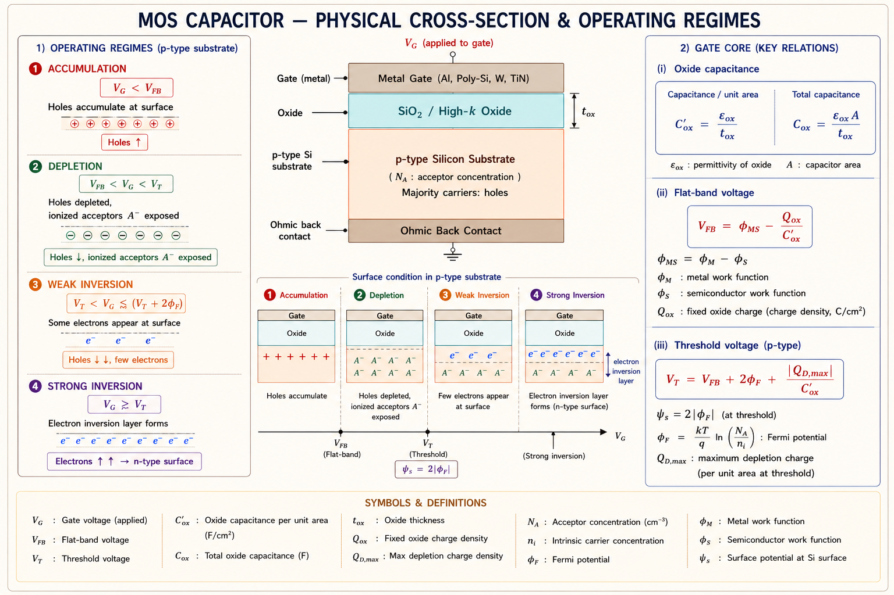

MOS structure, energy band diagrams, accumulation, depletion and inversion regimes, threshold voltage derivation, C–V characteristics — complete GATE EC, IES E&T and PSU coverage with full derivations, inline SVG diagrams and solved examples.
Every MOSFET — the transistor that powers every chip, phone, and computer — is built around one core structure: the Metal–Oxide–Semiconductor (MOS) capacitor. Before we can understand how a transistor switches, we must understand how charges are controlled at the semiconductor surface by an applied voltage. The MOS capacitor is the foundation.
The MOS capacitor is not just a passive component — it is a charge-control device. By varying the gate voltage, we can repel majority carriers (depletion), attract minority carriers (inversion), or pile up majority carriers (accumulation) at the oxide–semiconductor interface. This control over surface charge density is exactly what makes the MOSFET a switch.

Think of the semiconductor surface as a tank. The gate voltage is a pump. A negative voltage pumps extra holes into the tank (accumulation). A moderate positive voltage drains holes out creating an empty zone (depletion). A large positive voltage pumps electrons into the tank from nowhere (inversion). The MOSFET current flows only when the inversion layer — the channel — is formed.
The MOS capacitor consists of three layers stacked vertically: a conducting gate (Metal or heavily doped polysilicon), an insulating oxide layer (SiO₂ or high-k dielectric), and a semiconductor substrate (typically p-type or n-type silicon). The interface between SiO₂ and Si is one of the most studied and technologically important interfaces in all of engineering.[1]
| Parameter | Symbol | Typical Value | Physical Significance |
|---|---|---|---|
| Oxide thickness | \(t_{ox}\) | 2–10 nm (modern), ~100 nm (old) | Determines oxide capacitance; thinner → more control |
| Oxide permittivity | \(\varepsilon_{ox}\) | 3.9 ε₀ (SiO₂), ~20–25 ε₀ (HfO₂) | High-k dielectrics allow thicker physical film |
| Oxide capacitance/area | \(C_{ox}\) | εox/tox | Key quantity in all MOSFET formulas |
| Substrate doping | \(N_A\) or \(N_D\) | 10¹⁵ – 10¹⁷ cm⁻³ | Controls VT, depletion width, threshold |
| Flat-band voltage | \(V_{FB}\) | Depends on φms and Qox | Reference: energy bands are flat across structure |
| Fixed oxide charge | \(Q_{ox}\) | 10¹⁰ – 10¹² q C/cm² | Positive charges at Si–SiO₂ interface; shifts VT |
| Intrinsic carrier density | \(n_i\) | 1.5 × 10¹⁰ cm⁻³ (Si, 300 K) | Reference for Fermi potential calculation |
In a real MOS structure, the metal gate and semiconductor have different work functions (\(\phi_m\) and \(\phi_s\)). Even at zero applied voltage, built-in band bending exists. The flat-band voltage \(V_{FB}\) is the gate voltage required to remove this built-in bending, so that the energy bands inside the semiconductor are completely flat (no electric field, no charge).[1]
where \(\phi_{ms} = \phi_m - \phi_s\) = metal–semiconductor work-function difference; \(Q_{ox}\) = effective fixed oxide charge density (C/cm²).
The energy band diagram is the most powerful tool for understanding MOS behaviour. It shows how the conduction band \(E_C\), valence band \(E_V\), Fermi level \(E_F\), and intrinsic Fermi level \(E_i\) vary across the structure under different bias conditions. The bending of these bands at the surface tells us which operating regime we are in.
Electron energy increases upward. When the bands bend downward near the surface, it means the electrostatic potential is higher there — electrons are attracted, holes are repelled. When bands bend upward, holes accumulate at the surface.
The surface potential \(\psi_s\) quantifies band bending at the oxide–semiconductor interface. It is defined as the difference between the intrinsic Fermi level in the bulk and at the surface:
| Condition | \(\psi_s\) value | Physical Meaning |
|---|---|---|
| Flat-Band | \(\psi_s = 0\) | No band bending; reference state |
| Accumulation | \(\psi_s < 0\) | Bands bent up; holes pile at surface |
| Depletion | \(0 < \psi_s < 2\phi_F\) | Bands bent down; depletion region forms |
| Onset of Inversion | \(\psi_s = 2\phi_F\) | Strong inversion threshold — MOSFET condition |
When a negative voltage is applied to the gate of a p-type MOS capacitor (relative to the substrate), the bands near the surface bend upward. The valence band moves closer to the Fermi level, and the hole concentration at the surface increases exponentially above the bulk value. This is the accumulation regime.
The MOS structure acts just like a parallel-plate capacitor in accumulation. The negative charge on the metal gate is balanced by an equal positive charge of holes just beneath the oxide. No depletion region exists; the semiconductor looks like a resistive sheet. The capacitance is simply \(C_{ox}\) — the oxide capacitance.
Because the hole layer at the surface is essentially a sheet of charge (delta function), the semiconductor capacitance \(C_S \to \infty\) in accumulation. The total MOS capacitance approaches the oxide capacitance \(C_{ox}\), which is the maximum measured value in a high-frequency C–V curve.
As the gate voltage is increased above the flat-band voltage for a p-type substrate, holes near the surface are repelled. A region devoid of mobile carriers forms, leaving behind negatively charged ionised acceptor atoms \(N_A^-\). This is the depletion region of width \(x_d\).
Under the depletion approximation (standard in Sze and Neamen), we assume:
\(\varepsilon_s\) = silicon permittivity = 11.7\(\varepsilon_0\) = 1.04 × 10⁻¹² F/cm; \(q\) = 1.6 × 10⁻¹⁹ C; \(N_A\) = acceptor doping density (cm⁻³).
In the depletion regime the semiconductor acts as a second capacitor in series with the oxide. The depletion capacitance per unit area is:
Students often forget that in depletion the MOS capacitance is not simply \(C_{ox}\). It is \(C_{ox}\) in series with \(C_{dep}\), so the total capacitance is less than \(C_{ox}\). The capacitance decreases as the gate voltage increases from flat-band toward threshold.
When \(\psi_s\) reaches \(2\phi_F\), the surface electron concentration equals the bulk hole concentration. This is called strong inversion — the condition at which the MOSFET channel turns on. Beyond this point, further increases in \(V_G\) add more electrons to the inversion layer rather than deepening the depletion region (which effectively saturates).[2]
Strong inversion is defined as the condition when the surface electron concentration equals the bulk hole concentration: \(n_s = p_{bulk} = N_A\). This requires \(\psi_s = 2\phi_F\). At this bias, \(x_d\) reaches its maximum value \(x_{d,\max}\) and the inversion charge layer (the channel) first appears.
Above threshold the inversion charge per unit area \(Q_{inv}\) (in C/cm²) increases linearly with \((V_G - V_T)\). This is the charge that forms the conducting channel in a MOSFET:
Once inversion begins, the inversion layer shields the bulk from any further field penetration. All additional gate charge is balanced by the inversion layer charge, not by deeper depletion. This is why \(x_d\) does not continue to grow beyond \(x_{d,\max}\) even as \(V_G\) is increased further above \(V_T\).
The threshold voltage \(V_T\) is the gate voltage at which the onset of strong inversion occurs (\(\psi_s = 2\phi_F\)). It is the most important MOSFET design parameter. Deriving it requires summing all the voltage drops across the MOS structure using the charge-sheet model.[1][3]
Applying Kirchhoff's voltage law from gate to substrate:
\(V_G = V_{FB} + V_{ox} + \psi_s\)
At threshold, \(\psi_s = 2\phi_F\) and the depletion charge is \(Q_{dep} = -qN_Ax_{d,\max}\)
In shorthand notation often used in GATE problems:
When a reverse bias \(V_{SB}\) is applied between source and body (substrate), the depletion region widens and \(V_T\) increases. This is the body effect (threshold shift due to substrate bias):
where \(\gamma = \frac{\sqrt{2q\varepsilon_s N_A}}{C_{ox}}\) is the body-effect coefficient (V^{1/2}).
| Parameter | Effect on V_T | Physical Reason |
|---|---|---|
| Increase N_A | V_T increases ↑ | More depletion charge needed; larger bulk potential ϕ_F |
| Increase t_ox | V_T increases ↑ | Weaker gate coupling; more V needed to invert |
| Positive Q_ox | V_T decreases ↓ | Positive oxide charge already inverts surface; less V_G needed |
| φ_ms negative (p⁺poly on n-Si) | V_T decreases ↓ | Work function aids inversion |
| Reverse body bias V_SB > 0 | V_T increases ↑ | Deeper depletion; more charge to invert surface |
| Increase temperature | V_T decreases ↓ | n_i increases → ϕ_F decreases; less band bending needed |
The capacitance–voltage (C–V) characteristic is the most powerful experimental tool for characterising a MOS capacitor. It reveals doping concentration, oxide thickness, flat-band voltage, threshold voltage, oxide charge density, and interface state density — all from a single measurement.
Positive oxide charge \(Q_{ox}\) shifts the entire C–V curve to the left (towards more negative gate voltages). Interface states cause a stretch-out of the C–V curve. Work-function difference \(\phi_{ms}\) causes a parallel shift. These shifts are frequently tested in GATE and IES.
Given: \(N_A = 5\times10^{16}\), \(t_{ox} = 8\times10^{-7}\) cm, \(\varepsilon_{ox} = 3.9 \times 8.854 \times 10^{-14}\) F/cm, \(n_i = 1.5 \times 10^{10}\) cm⁻³ at 300 K.
(a) Bulk Fermi potential:
(b) Oxide capacitance per unit area:
(c) Flat-band voltage:
(d) Threshold voltage:
A small positive threshold voltage means this n-channel device is just barely an enhancement mode device. The large negative \(V_{FB}\) (due to \(\phi_{ms}\)) nearly cancels the threshold. This is why gate work function engineering is critical in modern CMOS processes.
(a) Maximum depletion width:
(b) Minimum capacitance:
(c) Ratio (useful for reading HF C–V):
For a quick estimate: \(C_{\min}/C_{ox}\) is typically 10–25% for standard CMOS doping levels. A very high doping gives a higher ratio (thinner depletion); very low doping gives a lower ratio. This ratio directly tells you how much the HF C–V curve dips below \(C_{ox}\).
The threshold voltage increases by approximately 0.4 V due to the 2 V reverse body bias. This body effect is critical in long-channel MOSFETs where source and drain are at different potentials along the channel, making \(V_T\) position-dependent.
🟢 High Probability (appear almost every year)
🟡 Medium Probability
🔴 Lower Probability
Explanation: Strong inversion is universally defined as \(\psi_s = 2\phi_F\), where the surface electron concentration equals the bulk hole concentration \(N_A\). Option B describes weak inversion onset (\(\psi_s = \phi_F\), where \(n_s = n_i\)). Option D has a physically incorrect premise — inversion charge is finite at threshold.
Explanation: At high frequency, minority carriers cannot follow the AC signal, so the inversion charge does not contribute to the AC capacitance. The structure behaves as \(C_{ox}\) in series with the depletion capacitance \(\varepsilon_s/x_{d,\max}\), giving the minimum capacitance \(C_{\min}\). This is a standard result from Sze, Chapter 4.
Explanation: Positive oxide charge \(Q_{ox} > 0\) reduces the flat-band voltage (\(V_{FB} = \phi_{ms} - Q_{ox}/C_{ox}\), which becomes more negative as \(Q_{ox}\) increases). Since \(V_T = V_{FB} + 2\phi_F + |Q_{dep}|/C_{ox}\), a decrease in \(V_{FB}\) shifts \(V_T\) and the entire C–V curve to the left. This is a very common IES examination question.
Explanation: \(\gamma = \sqrt{2q\varepsilon_s N_A}/C_{ox}\). If \(t_{ox}\) doubles, \(C_{ox} = \varepsilon_{ox}/t_{ox}\) halves. Therefore \(\gamma\) doubles. A thicker oxide means poorer gate control over the channel, which also manifests as a larger body effect — \(V_T\) changes more for the same change in \(V_{SB}\).
Ask any question about MOS capacitors, threshold voltage, C–V curves, or GATE-style problems. Press Enter or click Ask.
Three layers: Metal (gate), Oxide (SiO₂/HfO₂), Semiconductor (Si). C_ox = ε_ox/t_ox. Flat-band V_FB = φ_ms − Q_ox/C_ox. Reference: bands flat, ψ_s = 0.
V_G < V_FB. Bands bend up. Holes accumulate. ψ_s < 0. C ≈ C_ox (maximum). No depletion region. Structure behaves as pure oxide capacitor.
V_FB < V_G < V_T. Holes repelled. Depletion width x_d = √(2ε_s ψ_s / qN_A). C = C_ox series C_dep. C decreases as V_G increases.
V_G ≥ V_T. Strong inversion: ψ_s = 2φ_F. Electron layer forms (the MOSFET channel). x_d saturates at x_d,max. Q_inv = C_ox(V_G − V_T).
V_T = V_FB + 2φ_F + |Q_dep,max|/C_ox. Body effect: V_T(V_SB) = V_T0 + γ(√(2φ_F+V_SB) − √2φ_F). γ = √(2qε_sN_A)/C_ox.
LF: C returns to C_ox in inversion (minority carriers respond). HF: C stays at C_min = ε_s/x_d,max in inversion. Q_ox shifts C–V left. D_it stretches it out.
MOSFET Structure and I–V Characteristics — long-channel MOSFET operation in linear and saturation regions, I_DS equations, transconductance g_m, output resistance r_o, small-signal model, short-channel effects (DIBL, velocity saturation, subthreshold swing), and modern FinFET/GAA structures — full GATE & IES coverage.
All technical content is derived from the following standard textbooks. All explanations, derivations, diagrams and examples are original to Aarova AI.